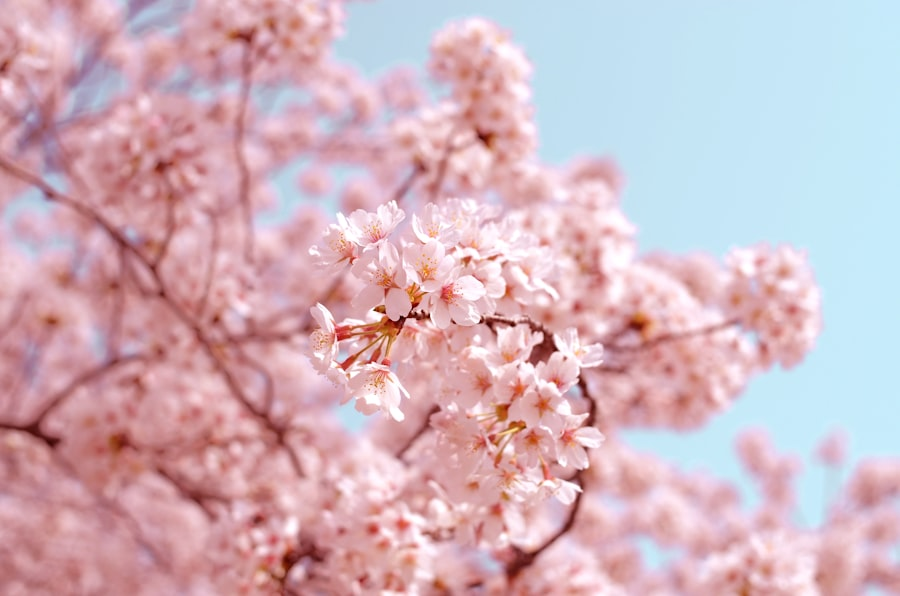
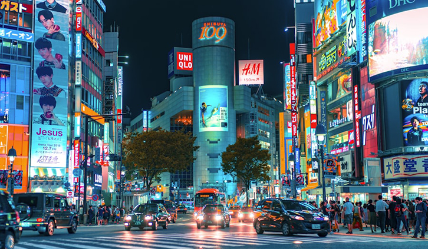
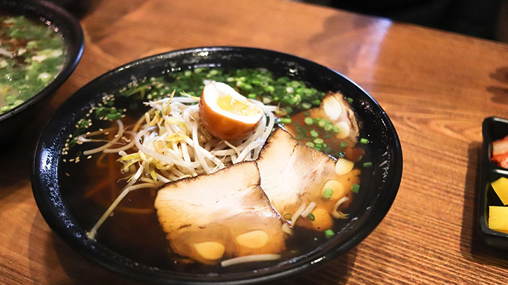

도쿄 여행 완벽 가이드
처음 가도 현지인처럼
1 도쿄 여행, 언제 가면 좋을까
도쿄는 사계절 내내 여행하기 좋은 도시입니다. 그중에서도 3~4월 벚꽃 시즌과 10~11월 단풍 시즌이 가장 인기 있는 시기로, 날씨가 쾌적하고 도심 곳곳이 아름답게 물듭니다.
여름 7~8월은 덥고 습하지만 마쓰리 축제 시즌으로 색다른 활기가 넘칩니다. 골든위크(4월 말~5월 초)나 오봉(8월 중순)은 숙소비가 급등하고 관광지가 매우 혼잡하니 최소 두 달 전에는 예약해 두는 것을 권장합니다. 겨울 12~2월은 비교적 한산해 인파 없이 여유롭게 도쿄를 즐길 수 있습니다.

우에노 공원의 벚꽃 시즌 — 매년 3월 말~4월 초가 절정
여행 목적에 따라 시기를 전략적으로 고르는 것이 도쿄를 더욱 알차게 즐기는 첫 번째 방법입니다.
2 숙소와 교통
처음 도쿄를 방문한다면 신주쿠나 시부야 근처를 숙소로 잡는 것이 가장 무난합니다. 두 곳 모두 교통이 편리하고 주변에 볼거리와 먹거리가 가득합니다. 전통적인 분위기를 원한다면 아사쿠사 지역이 좋은 선택입니다.
도쿄의 대중교통은 세계 최고 수준입니다. 스이카(Suica) 교통카드 하나면 지하철, JR선, 버스를 자유롭게 이용할 수 있으며 공항 도착 직후 자동판매기에서 바로 구입할 수 있습니다. 하루에 지하철을 네 번 이상 탄다면 도쿄 메트로 1일 패스(600엔)가 훨씬 경제적입니다.

시부야 스크램블 교차로 — 도쿄를 상징하는 풍경
지역 간 이동 시간은 지하철 기준 10~20분 내외로 짧은 편입니다. 구글 맵만 있으면 환승 경로를 어렵지 않게 찾을 수 있습니다.
3 음식 — 반드시 먹어야 할 것들
도쿄는 미슐랭 스타 레스토랑이 세계에서 가장 많은 미식의 도시입니다. 고급 레스토랑부터 편의점 음식까지, 어디서든 높은 수준의 맛을 경험할 수 있습니다. 신주쿠와 시부야 골목의 라멘, 쓰키지 장외시장의 신선한 스시, 유락초 이자카야 거리의 야키토리는 꼭 경험해 보길 권합니다.

도쿄 골목 라멘 — 진한 국물 한 그릇으로 여행의 피로가 풀린다
런치 타임(11:30~13:30)에는 고급 레스토랑도 저렴한 런치 세트를 운영합니다. 같은 가게를 저녁의 절반 가격에 즐길 수 있으니 적극 활용해 보세요. 편의점 음식도 절대 무시하지 마세요. 세븐일레븐과 로손의 삼각김밥과 멜론빵은 도쿄 여행의 소소한 즐거움입니다.